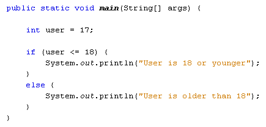
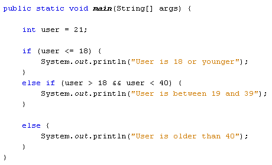
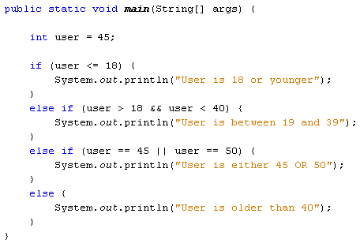

Instead of using two IF Statements, you can use an IF … ELSE Statement instead. Here's the structure of an IF … ELSE statement:
if ( condition_to_test ) {
}
else {
}
The first line starts with if, followed by the condition you want to test for. This goes between two round brackets. Again, curly brackets are used to section off the different choices. The second choice goes after the word else and between its own curly brackets. Here's our code again that checks a user's age:

So there are only two choices here: either the user is 18 or younger, or the user is older than that. Adapt your code to match that in the image above and try it out. You should find that the first message prints out. Now change the value of the user variable to 20 and run the code again. The message between the ELSE curly brackets should display in the Output window.
You can test for more than two choices. For example, what if we wanted to test for more age ranges, say 19 to 39, and 40 and over? For more than two choices, the IF … ELSE IF statement can be used. The structure of an IF … ELSE IF is this:
if ( condition_one ) {
}
else if ( condition_two
) {
}
else {
}
The new part is this:
else if ( condition_two ) {
}
So the first IF tests for condition number one (18 or under, for example). Next comes else if, followed by a pair of round brackets. The second condition goes between these new round brackets. Anything not caught by the first two conditions will be caught be the final else. Again, code is sectioned off using curly brackets, with each if, else if, or else having its own pair of curly brackets. Miss one out and you'll get error messages.
Before trying out some new code, you'll need to learn some more conditional operators. The ones you have used so far are these:
> Greater Than
< Less Than
>= Greater Than or
Equal To
<= Less Than or Equal
To
Here's four more you can use:
&& AND
|| OR
== HAS A VALUE OF
! NOT
The first one is two ampersand symbols, and is used to test for more than one condition at the same time. We can use it to test for two age ranges:
else if ( user > 18 && user < 40 )
Here, we want to check if the user is older than 18 but younger than 40. Remember, we're trying to check what is inside of the user variable. The first condition is "Greater than 18" ( user > 18 ). The second condition is "Less than 40" ( user < 40). In between the two we have our AND operator ( &&). So the whole line says "else if user is greater than 18 AND user is less than 40."
We'll get to the other three conditional operators in a moment. But here's
some new code to try out:

Run your programme and test it out. You should be able to guess what it will print out before running it. Because we have a value of 21 for the user variable the message between the curly brackets of else if will display in the Output window.
Exercise
Change the value of the user variable from 21 to 45. The message for the else
section of the code should now display.
You can add as many else if parts as you want. Suppose we wanted to check if
the user was either 45 or 50. We can use two of the new conditional operators
above. We can check if the user variable "has a value of 45" OR "has
a value of 50":
else if (user == 45 || user == 50)
To test if the user variable has a value of something you use two equal signs, with no space between them. Java will test for that value and no other values. Because want to test for the user being 50 as well, we can have another condition in the same round brackets: user == 50. This just says "test if the user variable has a value of 50". In between the two conditions, we have the OR operator. This is two pipe characters, which is just to the left of the letter "z" on a UK keyboard. Again, there's no space between the two. The whole of the line above says "Else if the user has a value of 45 OR the user has a value of 50".
Here's our code with the new else if part:

Try it out for yourself. Change the value of the user variable to 45 and run your code. Then change it to 50 and run the code again. In both cases the new message should display.
The various conditional operators can be tricky to use. But you're just testing a variable for a particular condition. It's simply a question of picking the right conditional operator or operators for the job.
You can nest IF Statements. (This also applies to IF ... ELSE and IF ... ELSE IF statements.) Nesting an IF Statement just means putting one IF Statement inside of another. For example, suppose you want to find out if somebody is younger than 18, but older than 16. You want to display a different message for the over 16s. You start with the first IF Statement:
if ( user < 19 ) {
System.out.println( "18 or younger");
}
To check for over 16, you can place a second IF Statement inside of the one you already have. The format is the same:
if ( user < 19 ) {
if ( user >
16 && user < 19 ) {
System.out.println( "You are 17 or 18");
}
}
So the first IF Statement catches the user variable if it's less than 19. The second IF Statement narrows the user variable down even further, for ages over 16 and under 19. To print different messages, you can have an IF ... ELSE statement instead of the IF Statement above:
if ( user < 19 ) {
if ( user
> 16 && user < 19 ) {
System.out.println( "You are 17 or 18");
}
else {
System.out.println( "16 or younger");
}
}
Notice where all the curly brackets are in the code: get one wrong and your programme won't run.
Nested IF Statements can be tricky, but all you're trying to do is to narrow
down the choices.
In the next section, you'll about the Boolean variable type.